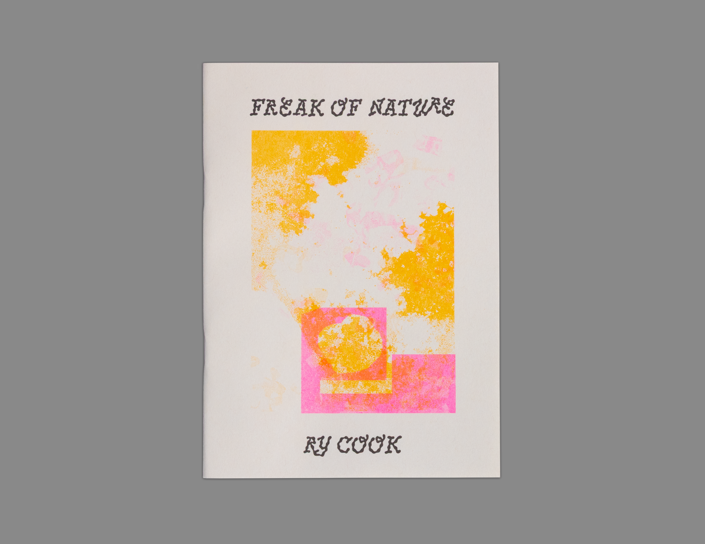
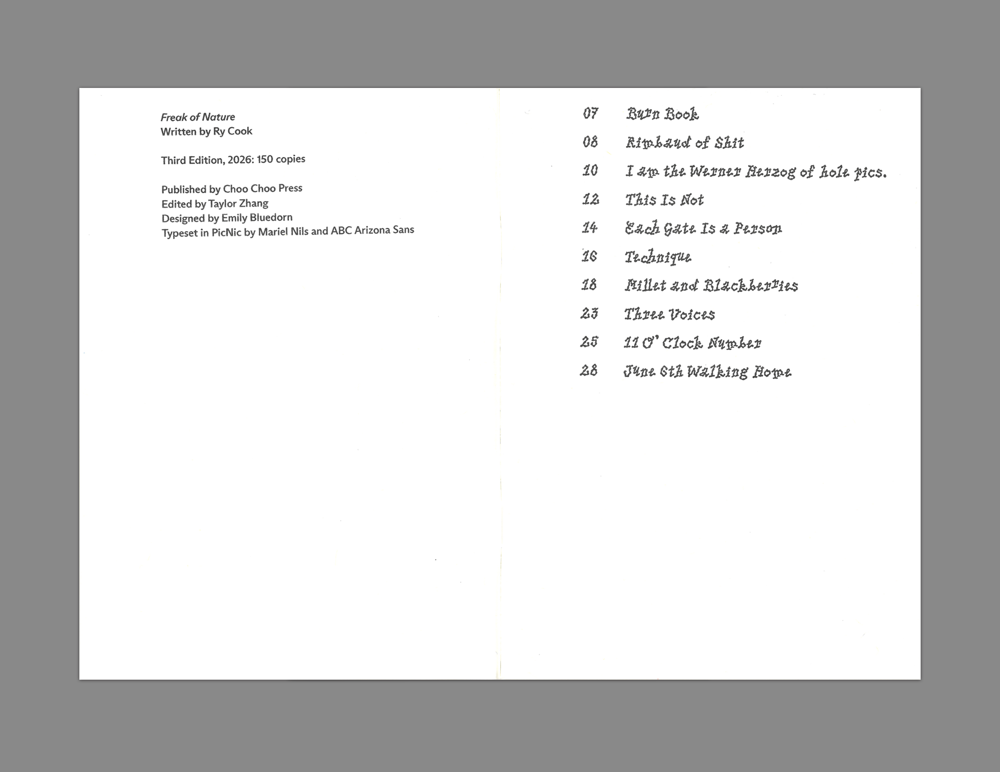
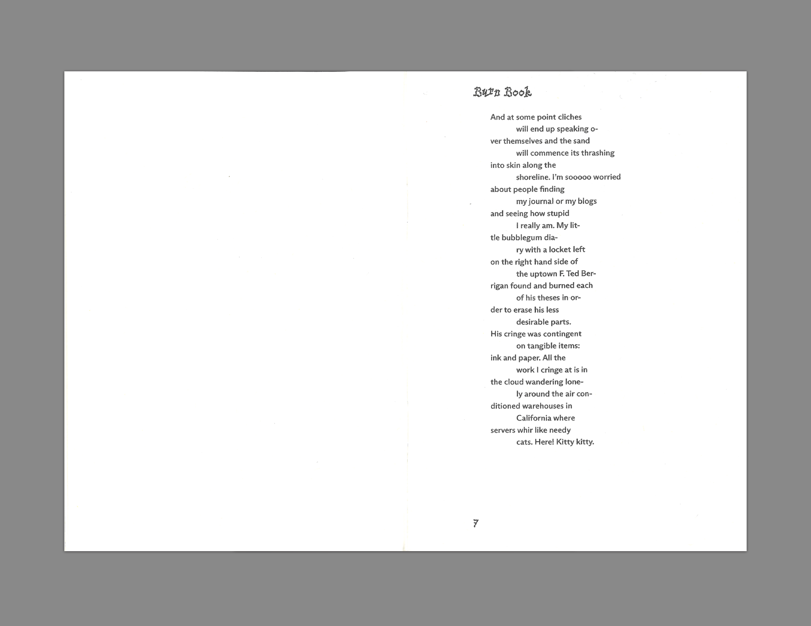

Freak of Nature
by Ry Cook
$15
Shop
- 2025
- 5x7in
- 28 pages
- 3-color riso
- Printed on French paper
- Saddle stitched
- Edition of 150, 3rd edition
- ISBN: 9798997222925
This collection of poems is a garish romp through the aesthetics of cringe.
A fearless collection that wields “cringe” as both a shield and a knife. No subject—be it car crashes, karaoke nights, or even stool samples—is off limits for Cook, who delights in the uncanny and the strange. Held together by a tight six syllable line structure, each poem dives headfirst into the chaos of shame and desire. A wild, unpredictable adventure and a joyous exploration of what it means to be alive.
Ry Cook is a Brooklyn-based poet/performer whose work has been published in the New Republic, The Baffler, Brooklyn Rail, Peel Lit, BOMB, Iterant, and others. Their second chapbook, ASUSHUNAMIR, comes out Fall 2026 through Blue Bag Press.


